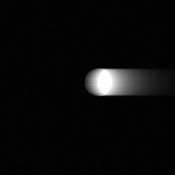
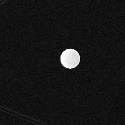
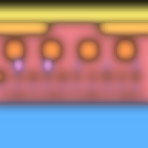
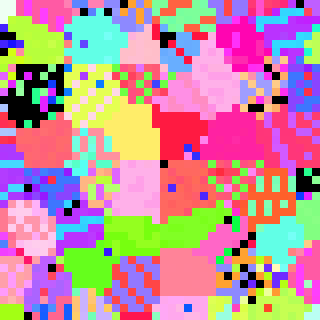
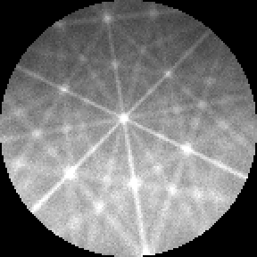
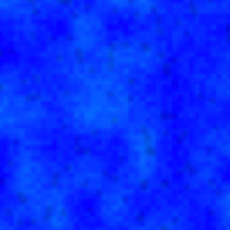

Standard operating procedure SOP-02Scanning electron microscopy
Analytical set-up
Charging, beam current, then X-ray spectroscopy (EDS), orientation mapping (EBSD) and cathodoluminescence (CL).
SOP-02, version 1.0, October 2026 After SOP-01 (column alignment) Figures computed with SEM-view
Scanning with ElectronsSEM-view · Advanced-EM
SOP-02 Analytical set-upBefore any analysis
Before any analysis
Analysis needs a stable beam of known current on a specimen that does not charge. Align the column first (SOP-01), at the voltage and working distance you will analyze with.
Charging
Image the area at the analysis voltage. Bright blooms, streaks along the scan, or an image that drifts and distorts mean the surface is charging.
For EDS and EBSD, coat the specimen (a few nm of carbon), or use low-vacuum mode if available.
For imaging an uncoated insulator, lower the voltage until the charging stops: at the second crossover E2, as many electrons leave as arrive. Its value varies with the material and its surface, so find it by stepping down.
Probe current
Move the Faraday cup under the beam and read the current with the picoammeter.
Set the current for the technique (table at right) and record it.
For long maps, measure again at the end to check for drift.

Fig. 1a. Uncoated alumina inclusion in nickel at 15 kV: charging (bright bloom, streak).

Fig. 1b. The same inclusion at 2.2 kV, just below E2: no charging.
Technique
Voltage
Current
Tilt
EDS
≥ 1.5–2 × the highest edge used
0.5–5 nA
0°
EBSD
15–30 kV
1–20 nA
70°
CL
2–15 kV (sets the depth)
1–10 nA
0°
Scanning with Electrons · SEM-view2
SOP-02 Analytical set-upEDS
EDS
X-ray spectroscopy
Each element emits X-rays at its own energies. A line is excited efficiently only when the beam energy is 1.5–2 times its critical energy (the overvoltage), and the X-rays come from a volume that grows quickly with voltage, so choose the lowest voltage that excites the lines you need.
Set the analytical working distance (the one at which the detector looks at the beam spot; often 8–10 mm) and 0° tilt.
Choose the voltage from the highest-energy line you need: for example 15 kV for Cu Kα (Ec 9.0 keV), 5–10 kV for light elements and a finer map.
Set the current so the dead time is about 20–40 %.
Check the energy calibration on a known line (Cu or Co standard) if the spectrum looks shifted.
Collect a spectrum from the area, identify the peaks, then map the elements of interest.
Result. A spectrum whose bremsstrahlung ends at the beam energy (the Duane–Hunt limit), with the expected peaks and no unexplained ones.
Note. Peaks within ~100 eV overlap at detector resolution (for example W Mα and Si Kα): check with a second line of each element.
In SEM-view. “Fit the EDS peaks” measures the detector resolution and energy scale; “map the phases” finds the phases from the element maps.

Fig. 2. Element map of a chip cross-section at 10 kV: Pt cap, Al pad, SiO₂, Cu lines and W vias, Si substrate. Features smaller than the X-ray range blur together.
Scanning with Electrons · SEM-view3
SOP-02 Analytical set-upEBSD
EBSD
Orientation mapping
Backscattered electrons diffracted by the lattice planes form Kikuchi bands on a phosphor screen. Tilting the polished specimen to 70° sends them toward the camera; the indexing software turns each pattern into a crystal orientation.
Use a flat, damage-free surface (final polish with colloidal silica or electropolishing).
Tilt the stage to 70° (or use a pre-tilted holder) and bring the area to the eucentric height and the EBSD working distance.
Set 15–30 kV and a few nA. Insert the EBSD camera.
Check a pattern: bands should be sharp and well above the background. Adjust exposure and gain; collect a background.
Calibrate the pattern centre and detector distance on a known crystal, or check the software's value.
Choose the step size (several points per grain) and start the map. Check the indexing rate after the first lines.
Result. A map in which most points index with a low mean angular deviation; unindexed points are at grain boundaries, pores or scratches.
Note. At 70° the interaction volume is stretched ~3× along the tilt direction, so grains smaller than ~100 nm give overlapping patterns. Transmission Kikuchi diffraction (TKD) on a thin lamella resolves them.

Fig. 3a. IPF-Z map of polycrystalline nickel, 40 × 40 points; black = not indexed.

Fig. 3b. One Kikuchi pattern at 20 kV, 70° tilt.
In SEM-view. The training task “Set up an EBSD map” starts from imaging conditions; “check the indexing” compares the map with the true orientations.
Scanning with Electrons · SEM-view4
SOP-02 Analytical set-upCL
CL
Cathodoluminescence
In semiconductors and insulators the beam makes electron–hole pairs; when they recombine they can emit light at the material's own energies. A parabolic mirror above the specimen collects it for a photomultiplier (panchromatic images) or a spectrometer (spectra and monochromatic maps).
Retract the other detectors that sit under the pole piece, then insert the CL mirror. Set the working distance to the mirror's focus (often ~10 mm) and 0° tilt.
Optimize the mirror position on a bright area: maximize the panchromatic signal.
Choose the voltage for the depth you want: low voltage for the surface, higher to reach buried layers. Use nanoamps, but watch for beam damage (the signal fades with time).
Record a spectrum from the area. Identify the bands.
For each band of interest, set the monochromator to it and record a map; or record a hyperspectral map (a spectrum per pixel).
Result. Spectra with the expected bands, and maps in which the defects that quench luminescence (dislocations, grain boundaries) show as dark features.
Note. The resolution is set by the generation volume and carrier diffusion, not by the probe: dark spots at dislocations are a few hundred nanometres across at 5 kV, and blur away at high voltage.
Fig. 4d. 2 kV: only the GaN cap emits (violet, near-UV); the wells 80 nm down are not reached.

Fig. 4e. 15 kV: the wells dominate (blue), and the larger generation volume blurs the dislocations.
In SEM-view. “Count the dislocations” fits the bands, estimates the indium content of the wells and the dislocation density, and compares them with the truth.
Scanning with Electrons · SEM-view5
Practice on SEM-view
The figures in this procedure were computed with SEM-view, a physics-based SEM simulator that runs in a web browser. Its training tasks “Image an insulator without charging” and “Set up an EBSD map” score your set-up against the hidden truth.
Open the training task
Scan the code with a phone, or open SEM-view and select Training.
Every signal
SE, BSE, EDS, EBSD, TKD and CL from the same interaction volume, with a live Monte Carlo.
Scored practice
Rate your own set-up, then compare it with the truth.
Your own data
Calibrate the digital twin from your instrument's images and spectra, in the browser.
SOP-02 Analytical set-up, version 1.0, October 2026 For training. Follow your facility's procedures and the manufacturer's documentation. github.com/Advanced-EM/SEM-view